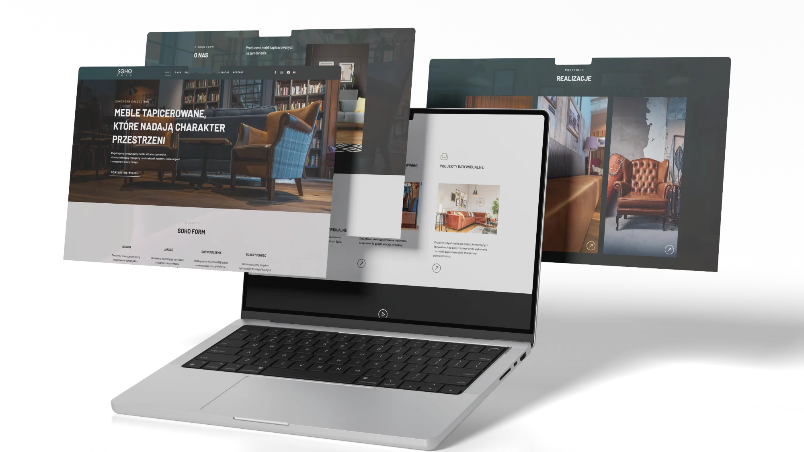

Projektowanie UX/UI.
Interfejs ma prowadzić użytkownika, a nie kazać mu się domyślać.
Projektujemy strony, sklepy, aplikacje i produkty cyfrowe – od user journey i architektury informacji, przez prototypy, po design system gotowy do wdrożenia.

Dobry projekt to nie ładne ekrany, tylko trafne decyzje.
Co użytkownik ma zobaczyć najpierw, gdzie kliknąć i co zrobić dalej – od tego zależy, czy strona sprzedaje, czy tylko wygląda. Dlatego zaczynamy od celu biznesowego i ludzi, którzy będą z produktu korzystać.
Na tej podstawie układamy strukturę, makiety i warstwę wizualną spójną z marką. Każdy projekt sprawdzamy na klikalnym prototypie, zanim trafi do programistów – poprawka kosztuje wtedy godziny, a nie tygodnie wdrożenia.
UX research i warsztaty
Na starcie rozmawiamy o celach, odbiorcach i ograniczeniach projektu. Analizujemy konkurencję, dostępne dane i ścieżki, którymi użytkownicy dziś docierają do celu – albo się po drodze gubią.
Efektem jest wspólny obraz tego, co produkt ma robić i dla kogo, zanim powstanie pierwszy ekran.
Architektura informacji i makiety
Porządkujemy treści i funkcje w strukturę logiczną dla użytkownika, a nie dla schematu organizacyjnego firmy.
Makiety pokazują układ kluczowych widoków bez kolorów i zdjęć. Łatwiej wtedy rozmawiać o tym, co naprawdę ważne: kolejności informacji i drodze do kontaktu.
UI design
Nadajemy interfejsowi charakter marki. Typografię, kolor, ikony i komponenty projektujemy widok po widoku – w wersji desktop i mobile.
Zdjęcia, wideo i grafika powstają w tym samym zespole, więc projekt nie czeka na materiały, a całość od początku wygląda spójnie.
Prototypy i testy
Klikalny prototyp pozwala przejść przez produkt tak, jakby już działał. Sprawdzamy na nim nawigację, formularze i kluczowe ścieżki – z zespołem klienta i z użytkownikami.
Wnioski z testów wracają do projektu, zanim powstanie choć linijka kodu.
Design system i przekazanie
Kończymy uporządkowanym zestawem komponentów, stylów i zasad. Programiści wdrażają go 1:1, a zespół klienta rozwija produkt bez rozjeżdżania się wyglądu.
Wdrożenie możemy zrobić u siebie – w ramach usługi Strony internetowe.
Jak pracujemy
Warsztat
Cel, odbiorca i zakres – ustalamy, co produkt ma zrobić.
Architektura
Struktura treści i makiety kluczowych widoków.
Projekt UI
Wygląd, komponenty i wersje mobilne.
Prototyp
Klikalna wersja do sprawdzenia przed wdrożeniem.
Przekazanie
Design system i pliki gotowe do developmentu.
Realizacje


FAQ – najczęstsze pytania
Czym różni się UX od UI?
UX to logika produktu: struktura, ścieżki i to, jak łatwo osiągnąć cel. UI to warstwa, którą widać – typografia, kolor i komponenty. Projektujemy oba, bo jedno bez drugiego nie działa.
Mam już stronę. Da się ją poprawić bez budowania od zera?
Tak. Zaczynamy od audytu UX, pokazujemy miejsca, w których użytkownicy się gubią, i projektujemy zmiany w kolejności od tych, które dadzą najwięcej.
W jakich narzędziach pracujecie?
W Figmie i całym pakiecie Adobe Creative Cloud – narzędzie dobieramy do zadania, a nie odwrotnie. Dostajesz dostęp do plików, prototypu i design systemu, bez zamkniętych formatów.
Czy wdrożycie zaprojektowaną stronę?
Tak. Development prowadzimy u siebie – od WordPressa, przez React, po dowolną technologię dopasowaną do projektu. Szczegóły znajdziesz w usłudze Strony internetowe.
Ile trwa projekt UX/UI?
To zależy od zakresu – landing page to inna skala niż sklep czy aplikacja. Termin i wycenę podajemy po briefie albo krótkim warsztacie.